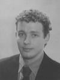
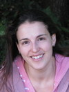

DEBS 2010 is
sponsored by


DEBS 2010 is
in cooperation with:

") |
TutorialsSQL-based Event Processing: Syntax, Semantics and ImplementationBernhard Seeger - Philipps-University of Marburg
During the last few years, more and more event processing systems emerge with a declarative event processing language that is closely related to SQL. Though the origin of these systems is SQL, there are important differences among them regarding the extension of syntax and semantics. In this tutorial, we give an overview of the underlying techniques of SQL-based event processing systems and discuss their differences as well as their similarities. In particular, we present in detail the generally accepted extensions of SQL, e.g. windows and pattern matching, to support the required expressiveness for event processing. This tutorial is not only limited to the query language, but also gives an introduction of the underlying algorithms and the optimization of declarative continuous queries. Bernhard Seeger is a professor at Philipps-University of Marburg, heading the research group for information systems. For more than 15 years he is working on the design and implementation of new software infrastructures for future information landscapes. In particular, he has worked on complex event processing since more than 8 years when he started the PIPES project that is considered to be the first European research project on data stream processing. PIPES put focus on the semantics, implementation and application of stream processing infrastructures. The underlying approach to event-processing is largely inspired by his well-known research results on temporal and spatial databases. The results of the research work on PIPES are published in more than 30 scientific articles, conference reports and other publications. He is co-founder of the RTM Realtime Monitoring GmbH, a spin-off of PIPES that offers a CEP infrastructure built around a SQL-based streaming engine implemented in Java. Before joining Philipps-University in 1995, he worked as a research and teaching assistance at LMU Munich, University of Waterloo and University of Bremen. Event processing in Wireless Sensor Networks Antonio Loureiro - Federal University of Minas Gerais (UFMG), Brazil
The fast growth in wireless sensors and actuators have the potential to create a global computing infrastructure that is profoundly changing the way people live and work. People may interact with themselves, the physical world, and information services using a wide range of sensor devices connected together, enabling computing and communication at an unprecedented scale and density. This new wireless sensor infrastructure presents a number of challenges especially when it comes to data-intensive applications: enormous scale, different types of data, varying and intermittent connectivity, location dependence and context awareness, limited bandwidth and power capacity, small device size, and multimedia delivery across different networks. Wireless sensor networks are now evolving from passive observation and reporting systems to active and reactive systems that dynamically evolve in response to complex and rapid spatio-temporal events. Upon the occurrence of events of interest, different network activities and functions start executing, transforming those simple events into meaningful and sophisticated events to an application. This processing chain includes localization, synchronization, information fusion, self-organization, power management, routing, filtering and correlation, query processing, privacy and security, data mining and knowledge discovery, etc. Furthermore, this processing chain should be based on event propagation models to accommodate the requirements of sensor applications. Compared to event processing already existing on distributed systems available on the Internet, that designed for wireless sensor networks poses unseen challenges due to limitations in sensor storage, processing, and communication capacities. Adding to the aforementioned issues is the curse of dimensionality. In practice, due to their sophistication, sensor events are usually identified by more than one attribute. Management of multi-dimensional data is already a difficult problem in information systems. Doing so under the resource constraints of sensor networks is even much harder. This tutorial aims at presenting a broad view of event processing in wireless sensor networks in the light of different contexts and backgrounds. The goal is to discuss the different network activities and functions that are related to event processing in wireless sensor networks. Antonio Loureiro is a Professor of Computer Science at the Federal University of Minas Gerais (UFMG), Brazil. He holds a PhD in Computer Science from the University of British Columbia, Canada, 1995. His main research areas are wireless sensor networks, computer networks, distributed systems, and distributed algorithms. In the last 10 years he has published over 80 papers in international conferences and journals. Most of those papers were presented by Professor Loureiro who has also been the instructor of six tutorials in Brazilian conferences in the last five years. Since 1996, when he became a faculty member at UFMG, Professor Loureiro has received seven times the Undergraduate Teaching Excellence Award in Computer Science from the students at the Department of Computer Science. He was the TPC Chair for LANOMS 2001 (Latin American Network Operations and Management Symposium, sponsored by IEEE Communications Society) and for the 2005 ACM Workshop on Wireless Multimedia Networking and Performance Modeling. Event Processing ArchitecturesAdrian Paschke (Freie Universitaet, Berlin) and Paul Vincent (TIBCO)
This tutorial introduces a reference architecture for event processing, as defined by the EPTS reference architecture (RA) working group. An event processing reference architecture allows users to quickly create event processing solutions that adhere to known architectural qualities, such as performance, scalability, and application coverage. This is supported by the contributed event processing "architectures" from EPTS working group members, including vendors and researchers. The tutorial covers the goals and aims of the reference architecture, and the inputs and relationships with the contributory architectures, and the methods used to abstract the (proposed EPTS) Reference Architecture.  Adrian Paschke is Professor at the Freie Universitaet Berlin (FUB) holding a Chair on Corporate Semantic Web, and Director of RuleML Inc., Vice Director of the Semantics Technologies Institute Berlin (STI Berlin), organizer of the Berlin Semantic Web Meetup Group and Research Director at the Centre for Information Technology Transfer (CITT) GmbH. He is Steering-Committee Chair of the RuleML Web Rule Standardization Initiative (RuleML), co-chair of the Reaction RuleML technical group, founding member of the Event Processing Technology Society (EPTS), co-chair of the EPTS Reference Architecture working group (EPTS RA), voting member of OMG, and active member of several W3C groups such as the W3C Health Care and Life Sciences group (W3C HCLS) and the W3C Rule Interchange Format working group (W3C RIF), where he is editor of the W3C RIF standard and is hosting the W3C HCLS KB in Berlin. Adrian is/was involved in several national and international projects such as the EU Network of Excellence REWERSE, EU STREP Sealife and is currently leading the BMBF InnoProfile project Corporate Semantic Web. Paul Vincent is the fellow Co-chair of the EPTS Reference Architecture Working Group, Member of the British Computer Society, co-chair of OMG PRR rules standard, and CTO for CEP and Business Rules at TIBCO Software. He holds an MSc in Intelligence Systems, and has presented CEP and rule tutorials and presentations at various events over the past years (OMG Workshops, BRForum, Semantic Tech Conference, DAMA, etc) as well as providing customer training and guidance for event processing users in Fortune 100 organizations. Context aware computing and its utilization in event based systems Opher Etzion, Ella Rabinovich, Yonit Magid, Inna Skarbovsky, and Nir Zolotorevsky - IBM Haifa
We think and act within contexts; we do things differently in different circumstances, different times and different locations. Recently we observe that context is becoming a major abstraction in the computing world in general and in event-based systems in particular, Gartner has added two context related items to its recent hype cycle: context delivery architecture and context-enriched services. There are various relations between events and context, on one hand events play vital role in supporting dynamic contexts, and on the other hand, context is an important abstraction in event processing. The tutorial is intended to discuss the notion of context in general, and its projection on event based systems, and to provide some glimpse into the state of the practice on contexts. Opher Etzion is IBM Senior Technical Staff Member and Event Processing Scientific Leader in IBM Haifa Research Lab, Previously he has been lead architect of event processing technology in IBM Websphere, and a Senior Manager in IBM Research division, managed a department that has performed one of the pioneering projects that shaped the area of "complex event processing". He is also the chair of EPTS (Event Processing Technical Society). In parallel he is also an adjunct faculty member in the rank of professor at the Technion - Israel Institute of Technology. He has authored or co-authored around 80 papers in refereed journals and conferences, on topics related to: active databases, temporal databases, rule-base systems, complex event processing and autonomic computing, he is completing a book on event processing called: Event Processing in Action (with Peter Niblett) and co-authored the book "Temporal Database - Research and Practice", Springer-Verlag, 1998. Prior to joining IBM in 1997, he has been a faculty member and Founding Head of the Information Systems Engineering department at the Technion, and held professional and managerial positions in industry and in the Israel Air-Force. He is a senior member of ACM. He has supervised 6 PhD and 19 MSc students  Ella Rabinovich is a Research Staff Member in the Event-Based Systems department at the IBM Haifa Research Lab. She received a B.Sc. degree in Information Systems Engineering from Technion, Israel Institute of Technology, in 2006, and is currently a M.Sc. student in Information Management Engineering. Her past experience includes development of tools for verification of hardware systems, and her current research focuses on event-based technologies. Yonit Magid is a Research Staff Member in the Software and Services department, Event Based Systems group at the IBM Haifa Research Lab. She received a B.Sc. degree in Computer Science and an M. Sc. degree in Computer Science from the Technion, the Israel Institute of Technology, in 1999 and 2007, respectively. Her past experience includes developing emulation boards, test generator and such various tools assisting in hardware development life cycle. She joined her current group in 2003 focusing since on event-based technologies. Inna Skarbovsky is a Research Staff Member in the Event-based systems group at the IBM Haifa Research Lab. Her current research focuses on event-based technologies. Her past experience includes development of high-availability high-performance distributed applications, and current interests include distributed applications, cloud computing and SOA. Nir Zolotorevsky is research team member at IBM Haifa Research Lab in the event based middleware and solutions group. His research interests are Complex event processing and GIS. So far, he has been focused mainly on Spatial and spatio-temporal event processing models. Received Master degree in Information System Management at the Technion, Israeli Institute of Technology. Prior to joining IBM , Nir was technical consultant for large GIS and water management projects. Logic-Based Representation, Reasoning and Machine Learning for Event Recognition Alexander Artikis, Georgios Paliouras, Francois Portet and Anastasios Skarlatidis - Insititute of Informatics and Telecommunications, NCSR "Demokritos", Athens
Today's organisations require techniques for automated transformation of the large data volumes they collect during their operations into operational knowledge. This requirement may be addressed by employing event recognition systems that detect activities/events of special significance within an organisation, given streams of 'low-level' information that is very difficult to be utilised by humans. Numerous event recognition systems have been proposed in the literature. Recognition systems with a logic-based representation of event structures, in particular, have been attracting considerable attention because, among others, they exhibit a formal, declarative semantics, they haven proven to be efficient and scalable, and they are supported by machine learning tools automating the construction and refinement of event structures. In this tutorial we will review representative approaches of logic-based event recognition, and discuss open research issues of this field.
Georgios Paliouras is a senior researcher in the Institute of Informatics and Telecommunications at NCSR "Demokritos", in Athens, Greece. He holds a PhD from Manchester University on machine learning for event recognition. His research focuses on machine learning and knowledge discovery for ontology learning, user modeling, event recognition, information extraction and text classification. He is a member of the editorial board of the UMUAI journal and he has been participated in the organisation and programme committees of several conferences. He is also involved in many European and national research projects. Among others, he is responsible for NCSR "Demokritos" in the PRONTO project, where he contributes to event recognition and machine learning research. He has given a number of invited talks and tutorials at various institutions and conferences. He has taught postgraduate courses on Machine Learning and Information Extraction and has given lectures in numerous seminars and summer schools. Francois Portet obtained his PhD in computing science at the University of Rennes 1 in 2005 where he stayed as a short-term lecturer until late 2006. In autumn 2006, he joined, as Research Fellow, the department of computing science of the University of Aberdeen. Since October 2008, he is associate Professor at the Grenoble Institute of Technology and at the Laboratoire d'Informatique de Grenoble. His research interests lie in the areas of temporal representation and reasoning, medical decision support systems, data mining, and reasoning with uncertainty in NLP. During his Ph.D at the IRISA lab, he was a member of the RNTS CEPICA project and was the main contributor of the IP-Calicot system (Cardiac Arrhythmias Learning for Intelligent Classification of On-line Tracks). Currently, he is involved in the ANR Sweethome project (home automation system using voice command in a smart home), where he is working on decision-making from uncertain and inaccurate sensor data. He has taught courses on Artificial Intelligence in Rennes and in Aberdeen. Anastasios Skarlatidis is a PhD candidate in the Institute of Informatics & Telecommunications at the National Center for Scientific Research "Demokritos", in Athens, Greece, in collaboration with the Department of Information and Communication Systems, University of Aegean. He holds a BSc degree in Computer Science, from Technological Educational Institute of Thessaloniki. His research interests focus on Machine Learning, Artificial Intelligence and Event Recognition. He is currently working on the EU FP7 PRONTO project for the application of Machine Learning methods to Event Recognition. In the past has worked for the DELTIO national project. |
 Alexander Artikis is a
Research Associate in the Institute of Informatics &
Telecommunications at NCSR "Demokritos", in Athens, Greece. He holds a
PhD from Imperial College London on the topic of norm-governed
multi-agent systems. His research interests lie in the areas of
distributed artificial intelligence, temporal representation and
reasoning, artificial intelligence & law, and description logics. He
has published papers in related journals and conferences, such as the
Artificial Intelligence Journal, the ACM Transactions on Computational
Logic, and the Logic Journal of the IGPL. He is currently working on
the EU FP7 PRONTO project, being responsible for the event recognition
work-package. In the past he has worked for several international and
national projects, including the highly successful EU FET ALFEBIITE
project. Dr. Artikis has been teaching undergraduate courses on logic,
and distributed artificial intelligence, in the University of
Piraeus. He has served as a member of the program committees of
several conferences and workshops, and has co-organised six workshops.
Alexander Artikis is a
Research Associate in the Institute of Informatics &
Telecommunications at NCSR "Demokritos", in Athens, Greece. He holds a
PhD from Imperial College London on the topic of norm-governed
multi-agent systems. His research interests lie in the areas of
distributed artificial intelligence, temporal representation and
reasoning, artificial intelligence & law, and description logics. He
has published papers in related journals and conferences, such as the
Artificial Intelligence Journal, the ACM Transactions on Computational
Logic, and the Logic Journal of the IGPL. He is currently working on
the EU FP7 PRONTO project, being responsible for the event recognition
work-package. In the past he has worked for several international and
national projects, including the highly successful EU FET ALFEBIITE
project. Dr. Artikis has been teaching undergraduate courses on logic,
and distributed artificial intelligence, in the University of
Piraeus. He has served as a member of the program committees of
several conferences and workshops, and has co-organised six workshops.